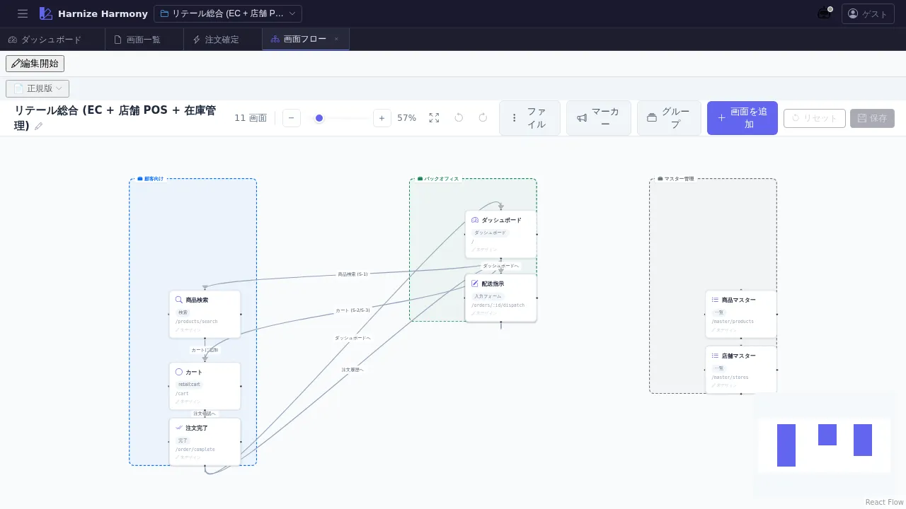

画面フロー図
対象画面:
FlowEditor(frontend/src/components/flow/FlowEditor.tsx) ルート:/w/:wsId/screen/flow種別: シングルトンタブ
概要
プロジェクト全画面の遷移関係を ReactFlow キャンバスで可視化・編集する画面。画面 (Screen) を node、遷移 (edge) を線で結び、業務全体のユーザー導線を俯瞰する。node 位置は screen-flow-positions.json に永続化される。
到達経路
- HeaderMenu → 「画面」→ 「画面フロー」
- ダッシュボード等から画面遷移パネル経由
- 直接 URL:
/w/<wsId>/screen/flow
画面構成

主要エリア
- ヘッダーツールバー — 「画面追加」「保存」「リセット」 + 検証バッジ
- ReactFlow キャンバス — ズーム / パン操作可、Screen node + edge を描画
- 各 node は ScreenKind に応じたアイコン + 画面名 + URL 表示
- edge は遷移種別 (navigate / submit / replace 等) を色で区別
- MiniMap / Controls — 右下、キャンバス全体の navigator + zoom +/-
- 検証 / 警告パネル — error / warning を持つ node がハイライト
主要操作
| 操作 | 手段 | 結果 |
|---|---|---|
| 画面追加 | 「画面追加」ボタン | 新規 Screen が原点付近に配置される |
| node 移動 | node をドラッグ | 位置を screen-flow-positions.json に保存 |
| 画面デザイナーを開く | node をダブルクリック | /screen/design/:id が新タブで開く |
| 遷移 (edge) 追加 | node の handle 同士をドラッグで接続 | 新規 edge 作成、遷移種別はモーダルで選択 |
| edge 削除 | edge を選択 → Delete | 該当遷移が削除される |
| ズーム | マウスホイール / ctrl+scroll | canvas zoom in/out |
| 全体表示 | 右下 Controls の「Fit View」 | 全 node が画面に収まるよう自動配置 |
| 保存 | 「保存」 or Ctrl+S | レイアウト + 追加 / 削除を sync |
データ前提
- 空状態: 中央に「画面が未登録です」プレースホルダ
- 意味のある状態: retail サンプルでは商品検索 → カート → 注文確定 → 配送指示の主要 4 シナリオが edge で繋がれる
- node 位置情報は workspace の
harmony/screen-flow-positions.jsonで永続化 (削除すると初期配置にリセット)
関連仕様書
docs/spec/workspace.md—screen-flow-positions.jsonの保存先と path 規約
関連 skill
/create-flow <flowId>— 画面遷移トリガが処理フローと連携する場合の作成 skill (/process-flow/edit/:id参照)
既知の制約・注意
- ReactFlow の D&D は 静的 screenshot で操作説明が薄くなる点に注意。本マニュアルでは基本操作のみカバーし、複雑なレイアウト変更は実機で慣れること推奨
- 1000+ 画面規模での描画 perf は ReactFlow の virtualization 任せ。retail サンプル規模 (11 画面) では問題なし
- node 位置は
localStorageではなく workspace 内 file に保存されるため、別 PC でも同じレイアウトが見える